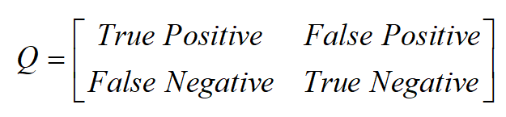
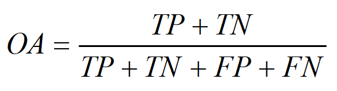
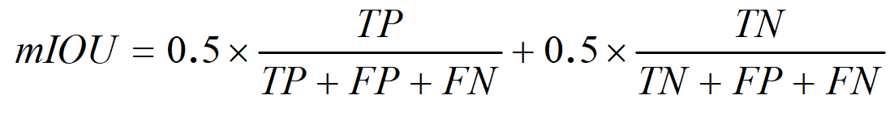

遥感图像在智慧城市、精准农业、紧急救援、灾害评估、国防和公共安全等领域都有重要应用。遥感图像解译是计算机视觉和遥感对地观测的交叉研究领域，举办遥感图像解译竞赛有助于提高遥感图像解译技术的研究水平，推动计算机视觉学科与遥感图像解译产业发展，促进基于人工智能的遥感图像解译技术在遥感领域的应用,培养遥感图像智能解译人才。
遥感图像变化检测竞赛即利用同一地理位置前后两个成像时间的遥感图像作为输入，分析其光谱特征以及各地物空间位置分布，提取该地理位置中的变化像元并得到其变化类型。本项竞赛以包含地面建筑物变化的光学遥感图像对作为处理对象，参赛队伍使用主办方提供的遥感图像数据进行变化检测处理，主办方依据评分标准对检测识别结果进行综合评价。
参赛者需在测试图像对上的每个像素位置赋予变化与未变化两个类别，提交结果的格式为PNG格式的建筑物变化图，每个像素位置的预测结果由数字表示， 其中255代表发生建筑物变化，0代表未发生建筑物变化。 点击开始测评 .
本次比赛成绩主要采用Overall Accuracy (OA)与mean Intersection Over Union (mIOU) 作为评价指标。首先基于建筑物变化检测的真实标签与预测结果，计算混淆矩阵Q:

其中，True Positive (TP), False Positive (FP), True Negative (TN)和False Negative (FN)分别代表真阳性样本数，假阳性样本数，真阴性样本数以及假阴性样本数。随后计算得：


OA与mIOU值越高，模型的建筑物变化检测结果越好，排名越高。